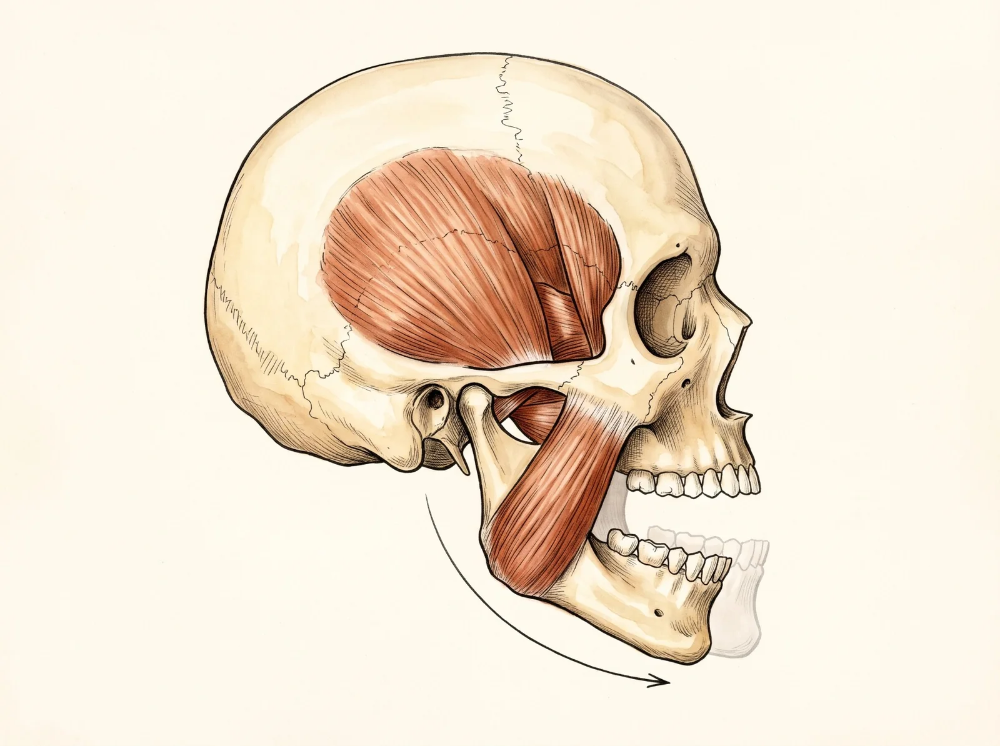
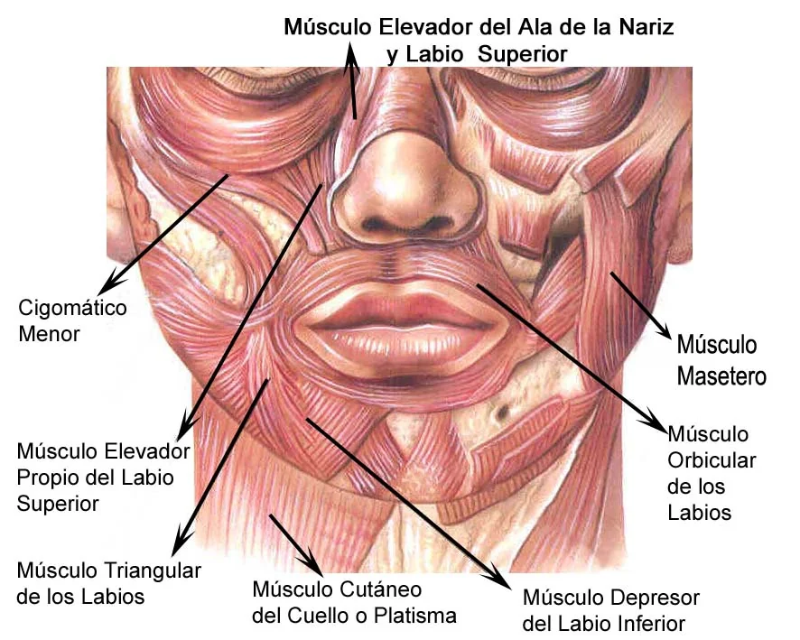

Vocal technique, step by step
The anatomy of a free voice
A method that doesn’t ask you to imagine colours or reach “up” for high notes. It explains which muscles are involved, how they move and how to take each movement into the piece you want to sing.
“Vocal technique is the foundation on which interpretation is built.”Carmen Moreno
The principle
Understand the movement, don’t imitate the sound
Many singers try to learn through imitation: they copy the sound of their teacher or of an admired performer and trust that one day it will come by itself. Carmen proposes the opposite path. First, you understand the anatomical movement that produces the free sound. Then you train it in the vocalise, and finally you apply it to the piece being studied.
That is why she insists that singing while “imagining a colour” is not a good idea: emotions fluctuate on stage, and the imagined colour with them. If the technical movement is right, however, the sound places itself on the vomer and has the qualities expected of it.
At first, the muscular movements for each interval may feel unusual. With practice you see that they are in harmony with the anatomy of the face and follow a logic, as in ballet, where positions and movements are practised at the barre to achieve the subtle gestures of expression later on.
It is important not to imitate any performer; it is better to analyse the technical strategy.Carmen Moreno · 2015
I don’t promise fun, but the pleasure of achieving a satisfying artistic musical performance.Carmen Moreno
Interactive map
Four movements, one sound
Click each point on the diagram or each tab to discover what happens in the body and how it is worked on in a lesson.




Abdominal breathing
The air that sustains the phrase
The inhaled air exerts an external rib and abdominal pressure, with the outward projection of the rectus abdominis muscle, generating the support pressure for the sound. This pressure makes it possible to sustain phrases, long notes and high notes without straining the larynx or the adjacent muscles.
By contrast, high, chest breathing produces short-lived high notes, forces you to use physical strength and, in the long run, can damage the vocal cords.
If the piece begins with a few bars for piano or orchestra, those bars or the melodic phrase must be breathed and sung mentally, so that when the singer’s voice is due to take part or come in, it is not aggressive but a continuation of the music that is already happening.
Jaw protrusion
Prepare the space before producing the sound
The jaw moves, protruding forward and outward, like “the slide of a trombone”, helped by the pterygoid, zygomatic and mentalis muscles, then drops straight down, not in a yawn. This preparation must be done before the sound is produced.
If the mouth drifts to one side of the face, it means only one pterygoid is being activated: repeat the movement.
Lip corners and lips
Bring the harmonics closer, give the sound its ring
The corners of the mouth stay close together, without opening into a smile. The lower lip drops and shows the lower teeth. The central part of the upper lip rises, thanks to the levator labii superioris muscle, to project the highest notes.
Bringing the lip corners closer also brings the harmonics closer, and the sound gains ring and brilliance.

Placement on the vomer
All the sounds at the same point of the face
The final aim of vocalising is to detect the sound on the vomer and to recognise the path of its vibration. The sound behaves like the epicentre of an earthquake, which is located at one point while its greatest frequency can be felt kilometres away. The sound is placed on the vomer and its frequency travels beneath the skull, brushing the first cervical vertebra and consequently resonating in the chest; it continues its path through the head and, at the height where the frontal bone meets the two occipital bones, another vibrational point is generated, producing a vibration in the head; it continues along the route and, on reaching the face, takes hold of the 4 paranasal sinuses, giving the sound that stays on the vomer greater intensity in its projection.
A key idea
Vocalising is not warming up
For Carmen, technique is done while vocalising: the technique that is applied to the intervals that appear in the piece to be performed.
Each exercise allows the study of how to execute intervals of seconds, thirds, fifths, octave leaps, phrase starts on a high or low note, etc. While vocalising, the execution of the movement is observed and afterwards that same understanding is applied to the same intervals of the piece to be studied. She does the same with the choir: she devotes half an hour to vocalising before every rehearsal and every concert.
This way of working on the voice was the focus of her article in the International Choral Bulletin of the International Federation for Choral Music, IFCM, 2015.
We artists do not warm up, we do technique when we vocalise; it is the athlete who warms up.Carmen Moreno

From exercise to piece
An hour-long lesson
The same lesson online or in person, organised in two halves. This is how Carmen herself describes it.
0–30 min Vocalise: vocal technique
- 1
Two clear goals
Before each exercise she explains which interval is being worked on (a 2nd, a 3rd…) and which facial muscles are involved, such as the zygomaticus major or the depressor of the lips.
- 2
3D images
On the first day, and whenever needed, she shows 3D animations of breathing, jaw protrusion and sound placement.
- 3
Demonstration
She explains and shows how the exercise is done before vocalising begins.
- 4
Progressive intervals
From 2nds and 3rds to increasingly demanding intervals, never going lower or higher than your level allows.
- 5
Instant correction
She comments on the flashes of understanding and, if there is an error, stops the exercise, identifies the cause of the error, corrects it, and teaches the correct execution until understanding is achieved, and then continues.
- 6
Synchronisation
Little by little she works on synchronising abdominal breathing with the movements of jaw protrusion and of the lips. Learning time is relative for each person.
It can run longer depending on the student’s level and needs.
30–60 min Applying it to the piece
- 7
Application
What was understood in the exercises is taken into the piece you have chosen. To begin with she prefers a Renaissance piece, for its harmonic structure; later, other genres to suit your range.
The in-person classroom in Barcelona has a mirror next to the piano that makes communication easier. While the exercise is being done, Carmen performs the same movements as gestures so that the student can watch through the mirror and have the reference of the correct movement.
Signs worth correcting
What the body is telling you
Some movements while singing reveal which part of the technique has not yet been understood. Carmen watches for them in every vocalise.
The mouth shifts sideways
If the jaw moves to the right or left, only one of the two pterygoids is working. Watch the forward movement of protrusion.
The head tilts
It is the tendency to reach “up” for high notes. Placement on the vomer has not yet been understood.
The high note is tight
The jaw exit and the forward drop movements that make placement and freedom of sound easier are not being performed correctly.
Running out of air
Understanding of the support pressure generated by the abdominal muscles has not yet been reached.
Looking for a colour
Imagining the colour of the sound guarantees nothing useful, because emotion changes on stage. The correct anatomical movement does guarantee confidence and security in producing the sound.
Smiling while singing
Opening the lip corners into a smile separates the harmonics and takes away ring. The corners stay close together.
Frequently asked questions
About the method
What people most often ask when they first come to Carmen’s vocal technique.
Try a lessonDo I need to read music or have a good voice to start?
No. Studying vocal technique has no age or academic limit: all you need is the wish to sing better. Knowing how to read music helps, but it is not a requirement to start.
Does it work for contemporary music or only for classical singing?
The technical foundation is the same. In pop or contemporary music the lip corners are not kept as close, to stay true to the style, and support pressure is less demanding. If you later want to move into classical singing, you just add those details.
How long before I notice results?
It depends on each person and their starting point. What Carmen always sees is that the time invested in technique is recovered later when studying the pieces: difficulties are solved sooner and you learn to sing well.
What does “becoming independent” from your teacher mean?
That you understand the anatomical movements well enough to correct yourself. Carmen’s goal is that you don’t depend on her forever and that you end up mastering your instrument: your voice.
Where can I learn more?
In her book Mi técnica vocal paso a paso (in Spanish), with a 3D DVD, in the teaching video series and in the Academy’s advice.

Your first lesson
Is your voice made for singing? I’ll show you how.
Tell me your goal, project or intention with singing; we agree a line of vocal work and choose a convenient schedule, online or in person, here in Barcelona.